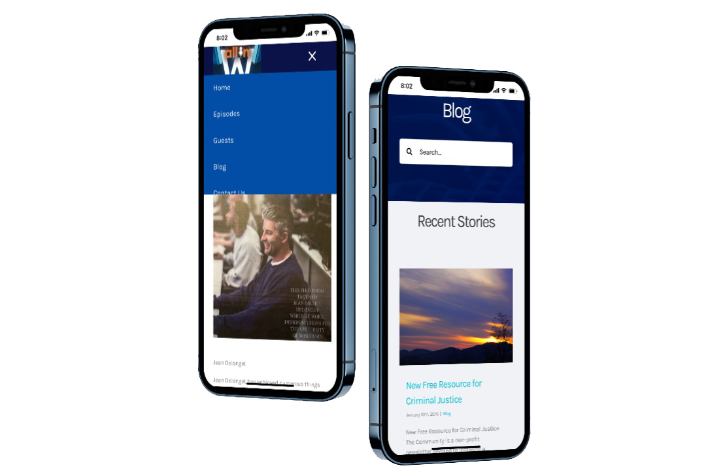

Website Conception and Future Planning
In the initial stage of the site's establishment, my supervisor and I discussed the basic issues of the site,
including the choice of design software and whether it is necessary to rebuild a brand new site in view of the existing broadcasting site,
and what are the benefits of rebuilding. The existing website is just a broadcast carrier and does not have any outstanding functions except
for the very simple publishing function. According to the future plan of my supervisor, I think his website needs more space to display his
story to share with people. Then the existing website will appear very limited. He also does not have a very good grasp of web page layout.
Tool Selection
Regarding the choice of software, my supervisor put forward a requirement that the future website maintenance should be simple. At the beginning of the design, I gave several plans. The first is a series of visual web design software such as WIX and Weebly. The advantage of this type of software is that it is easy to use and can achieve the desired effect at the same time. The second is to use WordPress to create web pages. Compared with the first type of software, the functions are more complicated, but because of its complexity, it also makes its functions more complete. After a series of discussions, we finally decided to use WordPress as a creation tool, mainly because he had experience in using WordPress.
Content display
The main content display includes podcast, information display of guests invited in podcast, and his personal blog. And taking into account the future direction of posting, I planned the partner’s page. The gradual development of the website may attract some attention from the outside world and attract some partners who want to participate in the project.
Project Challenges
The most difficult problem encountered in the design process is that it is almost impossible to reach the main user groups of the site. This made it difficult to start the initial user research work, which resulted in me having to conduct some appropriate interviews with my boss in the end. The information obtained through the interview allowed me to finally design two user personas.